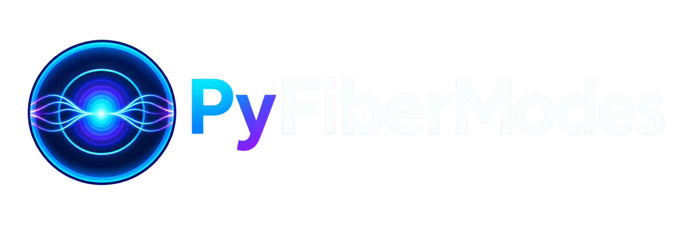

Date: Sep 23, 2026, Version: 0.14.1

Badge |
Status |
|---|---|
Python versions |
|
Documentation |
|
Continuous integration |
|
Test coverage |
|
PyPI package |
|
PyPI downloads |
|
Anaconda package |
|
Anaconda downloads |
|
Latest Anaconda release |
|


{kind=link}
PyFiberModes#
PyFiberModes is an open-source Python package for solving guided modes in circularly symmetric optical fibers. It provides analytical solvers for two-layer and multilayer step-index structures, full electric and magnetic field maps, wavelength-dependent modal properties, inverse design, and coupled-mode propagation.
The package is intended for reproducible fiber analysis without requiring a general-purpose finite-element model for every concentric geometry.
Features#
Scalar LP and vector HE, EH, TE, and TM mode families.
Two-layer, three-layer, and general concentric multilayer step-index fibers.
Effective index, propagation constant, cutoff, phase and group velocity, group-velocity dispersion, dispersion, and dispersion slope.
Electric and magnetic fields in Cartesian and cylindrical coordinates.
Effective area, Poynting vector, guided power, confinement, and field overlap.
Automatic guided-mode discovery and structured wavelength or parameter sweeps.
Constrained optimization of layer radii, refractive indices, and custom parameters.
Constant or longitudinally varying coupled-mode propagation.
A catalog of common and example fiber definitions stored as readable YAML files.
Structured solver diagnostics, validated configuration models, and explicit solver protocols for extending numerical backends.
Geometry-aware modal caching and vectorized radial index and field workflows.
Installation#
PyFiberModes requires Python 3.11 or newer. Install the released package from PyPI:
python -m pip install PyFiberModes
Matplotlib-based field visualizations are optional:
python -m pip install "PyFiberModes[plotting]"
or from Anaconda:
conda install pyfibermodes --channel martinpdes
Verify the installation using the same interpreter that will run your simulations:
python -c "import PyFiberModes; print(PyFiberModes.__version__)"
Fiber material names are resolved through a lightweight, pluggable registry. PyOptik is not required; applications can register their own dispersive model objects or simple wavelength-to-index callables.
First mode calculation#
Load the bundled SMF-28 definition at 1550 nm and solve its fundamental LP mode. Lengths and wavelengths are expressed in SI units.
from PyFiberModes import LP01
from PyFiberModes.fiber import load_fiber
fiber = load_fiber("SMF28", wavelength=1550e-9)
effective_index = fiber.get_effective_index(LP01)
propagation_constant = fiber.get_propagation_constant(LP01)
dispersion = fiber.get_dispersion(LP01)
print(f"n_eff = {effective_index:.9f}")
print(f"beta = {propagation_constant:.6e} rad/m")
print(f"D = {dispersion:.3f} ps/(nm km)")
load_fiber accepts the stem of any YAML definition in
PyFiberModes/fiber_files. A fiber can also be assembled programmatically
with Fiber or FiberFactory.
Discovering guided modes#
find_modes searches a bounded set of mode orders and retains solutions
whose effective indices lie between the outer cladding index and the largest
fiber index:
modes = fiber.find_modes(
families=("LP",),
max_nu=4,
max_m=3,
)
for mode in modes:
print(mode, fiber.get_effective_index(mode))
Keeping max_nu and max_m close to the physically relevant range avoids
unnecessary root searches, especially for wavelength sweeps.
Wavelength sweeps#
Modal quantities can be evaluated over a wavelength grid without mutating the original fiber. Results are dense arrays whose rows correspond to parameter values and whose columns correspond to modes.
import numpy as np
wavelengths = np.linspace(1260e-9, 1650e-9, 101)
result = fiber.sweep(
wavelengths,
modes=modes,
metrics=("effective_index", "dispersion", "group_index"),
)
neff = result["effective_index"]
lp01_data = result.for_mode(LP01)
records = result.as_records()
neff.shape is (101, len(modes)). Missing or unguided solutions are
represented by NaN so that mode cutoffs remain visible in the result.
Fields and power#
Create a two-dimensional field grid from a solved mode:
field = fiber.get_mode_field(
mode=LP01,
limit=20e-6,
n_point=201,
)
electric_x = field.Ex()
intensity = field.Emod() ** 2
effective_area = field.get_effective_area()
confinement = field.get_confinement_factor(radius=4.1e-6)
power = field.get_power()
sx, sy, sz = field.get_poynting_vector()
figure = field.plot(plot_type=["Ex", "Ey", "Emod"], show=False)
figure.savefig("lp01-field.png", dpi=200)
The analytical radial solution is cached on a one-dimensional grid and then interpolated over the two-dimensional Cartesian mesh. Repeated component access therefore avoids solving the same radial samples again.
Inverse fiber design#
Optimization operates on copies of the supplied fiber, leaving the starting
design unchanged. The objective receives a candidate Fiber and returns a
scalar value to minimize.
from PyFiberModes import DesignParameter, optimize_fiber
core_radius = DesignParameter.layer_radius(
layer=0,
bounds=(3.0e-6, 6.0e-6),
)
design = optimize_fiber(
fiber,
parameters=[core_radius],
objective=lambda candidate: abs(candidate.get_dispersion(LP01)),
constraints=(
lambda candidate: candidate.get_effective_index(LP01)
- candidate.last_layer.refractive_index,
),
method="differential_evolution",
options={"seed": 7, "tol": 1e-6},
)
print(design.parameters)
print(design.objective, design.success)
Constraints follow the convention constraint(candidate) >= 0. Custom
DesignParameter instances can optimize any scalar property for which a
setter can be supplied.
Mode overlap and propagation#
Field overlaps and perturbation-weighted coupling matrices use the vector
electric field. Modal amplitudes then evolve according to
dA/dz = -i (beta + coupling) A.
import numpy as np
from PyFiberModes import CoupledModeSystem
multimode_fiber = load_fiber("test_multimode_fiber", wavelength=1550e-9)
multimode_modes = multimode_fiber.find_modes(
families=("LP",),
max_nu=3,
max_m=2,
)
selected_modes = multimode_modes[:2]
fields = [multimode_fiber.get_mode_field(mode, n_point=151) for mode in selected_modes]
betas = [multimode_fiber.get_propagation_constant(mode) for mode in selected_modes]
relative_betas = np.asarray(betas) - betas[0]
mode_overlap = fields[0].overlap(fields[1])
coupling = np.array([
[0.0, 0.25],
[0.25, 0.0],
])
system = CoupledModeSystem(betas=relative_betas, coupling=coupling)
z = np.linspace(0, 20, 500)
propagation = system.propagate(initial=[1.0, 0.0], z=z)
modal_power = propagation.powers
coupling may also be a callable receiving the longitudinal position and
returning a coupling matrix, enabling tapered or otherwise varying systems.
Use field_a.overlap(field_b) or PyFiberModes.coupling_matrix to derive
normalized overlaps from compatible field grids.
Scope and limitations#
PyFiberModes currently models concentric step-index layers. It is not a general finite-element solver for elliptical cores, photonic-crystal fibers, arbitrary two-dimensional index maps, bends, or complex leaky modes. Numerical derivatives used for group and dispersion quantities can also become sensitive near modal cutoff. Convergence should be checked by varying wavelength spacing, field extent, and field resolution for publication-quality calculations.
Documentation and examples#
The online documentation contains the API reference and executable example gallery, including:
effective index and normalized propagation calculations;
wavelength-dependent group index and dispersion;
LP and vector-mode field visualization;
tapered-fiber effective-index studies;
double-clad fiber field analysis; and
comparisons between supported analytical solvers.
API stability#
Supported imports come from the package root, for example
from PyFiberModes import Fiber, LP01. The
public API policy
defines compatibility guarantees and the deprecation period. Review the
migration guide
when upgrading across minor or major versions. Internal solver modules are not
covered by the compatibility guarantee.
Development and testing#
Clone the repository and install the development dependencies:
git clone https://github.com/MartinPdeS/PyFiberModes.git
cd PyFiberModes
python -m pip install -e ".[testing,documentation,dev]"
Run the same primary checks used by continuous integration:
make quality
make test
make release-check
Or run the complete local check target:
make check
Tests run on Python 3.11 through 3.13 in GitHub Actions. Bug reports and feature proposals are welcome through the issue tracker.
Releases and changelog#
User-visible changes are recorded in CHANGELOG.md. Release helpers keep the Python package, Conda recipe, generated version, Zenodo metadata, changelog, and annotated Git tag synchronized.
make release-check
make tag VERSION=v0.11.0
The tag command creates a local release commit and annotated tag but does not
push them. make release patch, make release minor, and
make release major derive and publish the next semantic version.
Citing PyFiberModes#
If PyFiberModes contributes to published research, please cite the archived
software release used in the analysis. Machine-readable citation metadata is
provided in
CITATION.cff,
with matching deposit metadata in .zenodo.json.
License#
PyFiberModes is distributed under the MIT License. See LICENSE.
Contact#
For questions and contributions, contact Martin Poinsinet de Sivry-Houle.